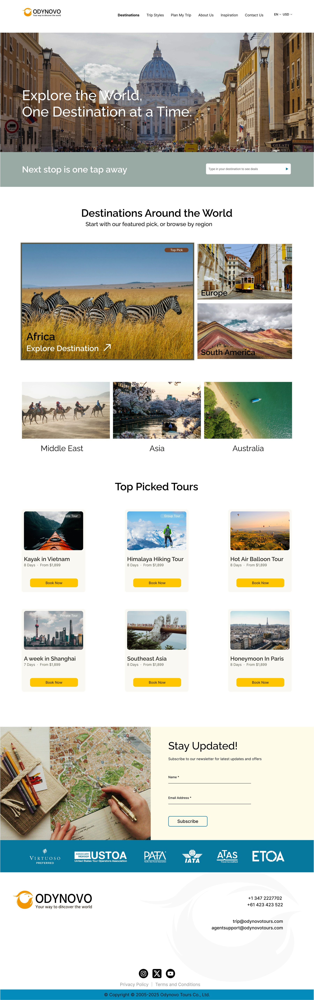
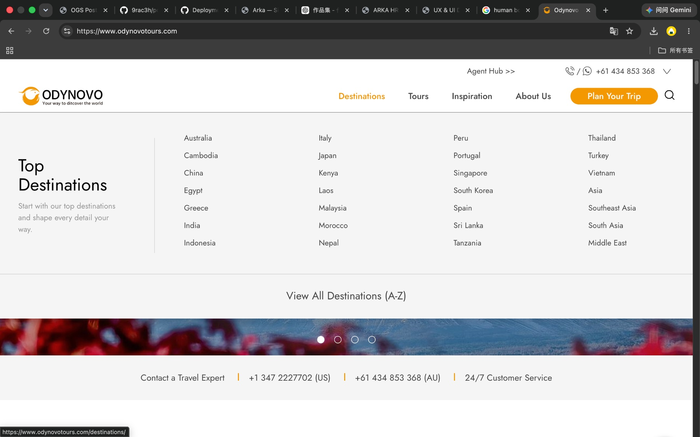
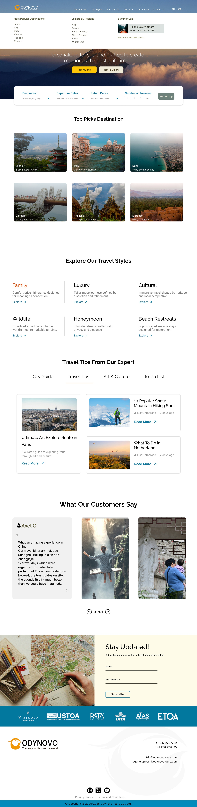
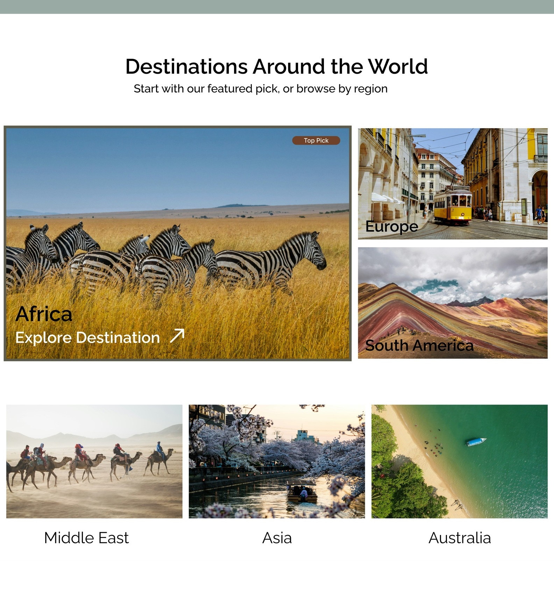
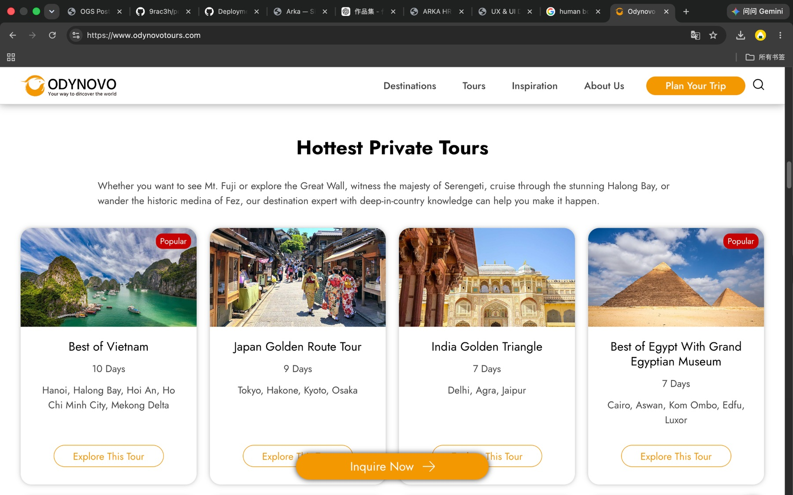
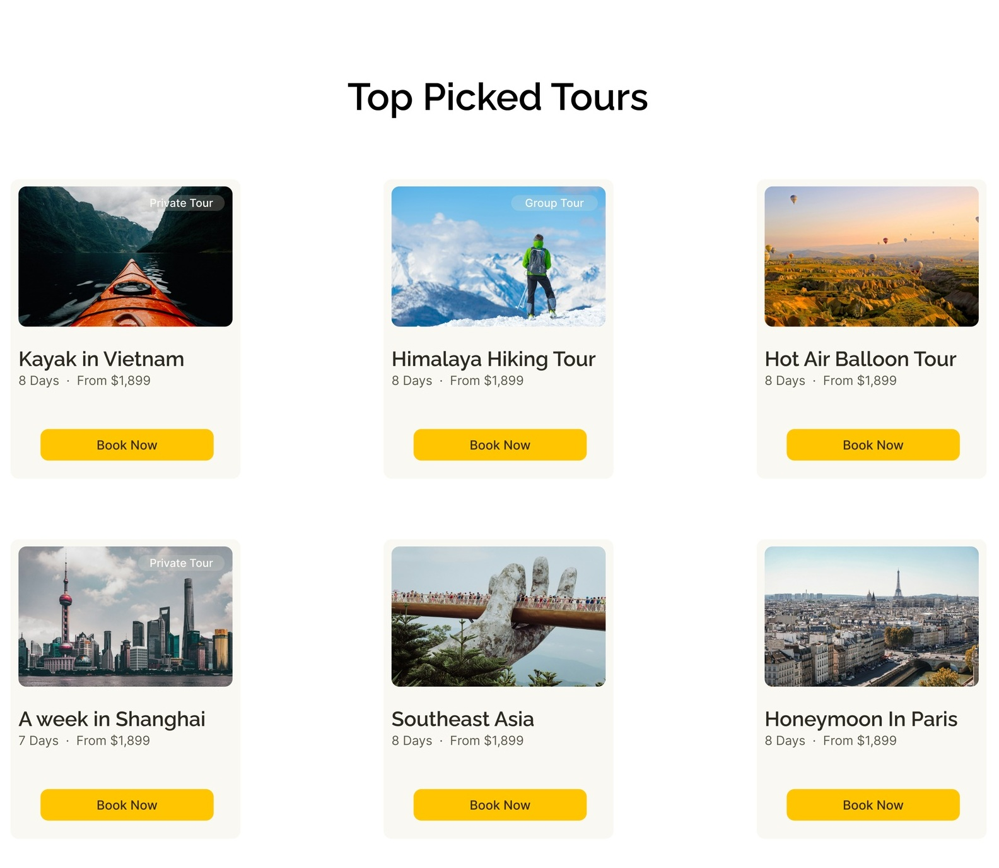
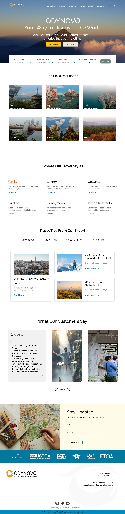

Academic Website Redesign
Odynovo Tours
Using brand and audience research to turn a dense, traditional travel website into a clearer and more guided trip-planning experience.

Project Overview
Making tailor-made travel easier to explore
Odynovo Tours creates private, tailor-made trips for travelers who want a more personal alternative to standard group tours. This redesign focused on helping users understand the brand, browse destinations, compare trip options, and move toward inquiry with less friction.
Rather than simply refreshing the visual style, I used research to rethink how the site could communicate trust, reduce planning stress, and guide users from inspiration to action.
Research
Understanding who needed reassurance and clarity
I started with a brand discovery worksheet to identify Odynovo’s value: personalized service, reliable planning, local guides, and stress-free travel arrangements. The research also defined three key audiences: older travelers, families, and busy professionals.
Older travelers were the primary audience, with strong needs around safety, comfort, trust, accessibility, and a clear inquiry process. Families needed convenience and flexible options, while busy professionals needed a faster way to evaluate whether a trip would be worth their limited vacation time.
Key Problems
Useful content was competing for attention
The existing site contained a large amount of travel content, but the browsing experience could feel heavy. The homepage used many tour cards and repeated CTAs, while the destination dropdown presented a long list of locations at once.
These patterns made it harder for users to quickly understand where to start, especially for travelers who needed reassurance before beginning a private trip inquiry.
Before
Long destination list

The original dropdown exposed many destinations at once, making browsing feel broad but less guided.
After
Structured mega menu

I reorganized the menu into popular destinations, regional browsing, and a featured travel deal to make exploration easier to scan.
Design Decision 01
Turning destination browsing into a guided entry point
Instead of treating destinations as a long list, I redesigned the destination section as a set of visual entry points. A larger featured destination gives users a clear place to start, while the smaller region cards let them continue browsing by geography.
Each image works as a clickable entry point. The hover state reveals a clearer action, helping users understand that they can explore a specific destination or region without adding more visible text to the default view.

Destination entry point module with a featured destination and clickable region cards.
Design Decision 02
Making trip options easier to compare
For the trip cards, I reduced the amount of visible information so users could scan and compare options faster. Each card highlights the trip type, title, duration, starting price, and a single booking action instead of asking users to process too many details upfront.
This supports the larger redesign goal: reduce planning stress while still giving users enough information to decide what to explore next.
Before
Dense tour cards

Tour cards included useful information, but the repeated structure made the section feel crowded and harder to compare quickly.
After
Simplified trip cards

I simplified the cards to focus on the essentials: trip type, title, duration, starting price, and one clear CTA.
Final Design
A clearer path from inspiration to inquiry
The final direction organizes the experience around a stronger hero message, a prominent trip-planning search area, destination browsing, travel styles, expert content, testimonials, and a newsletter/footer flow.
The result is a more structured travel website that still feels warm and visual, but gives users clearer next steps throughout the journey.

Outcome
Research-led structure, not just a visual refresh
This project helped me practice translating brand and audience research into concrete design decisions. The redesign focused on aligning Odynovo’s promise of personalized, stress-free travel with a clearer website structure, more focused navigation, and simpler trip browsing.